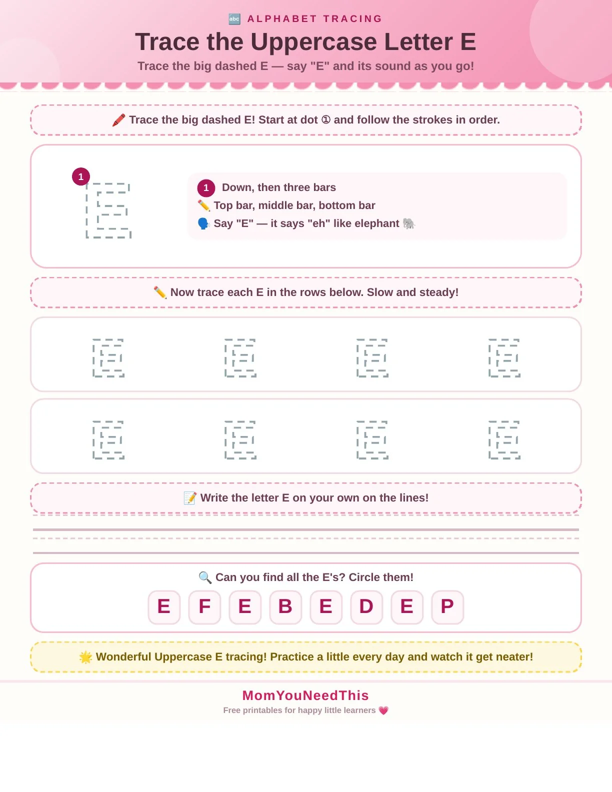

Uppercase Letter E Free Printable Uppercase Letter E Tracing Activity For Kids
Quick Answer
This free printable helps toddlers and preschoolers practice tracing the uppercase letter E — a straight back with three straight bars. The worksheet includes large guided tracing lines, directional arrows, and fun practice rows that build the letter in order: back first, then the top, middle and bottom bars. Download and print at home with no signup needed — perfect for building fine motor skills and letter recognition through hands-on practice.
Capital E is built like a bookshelf — one tall back and three straight shelves. This free printable uppercase letter e tracing worksheet gives toddlers and preschoolers a fun, no-prep way to practice all those straight lines — say the short E sound from egg and elephant as your child traces, print it at home, and learn the letter E through play.
✏️ Trace The Letter E
Use the printable to help your child trace the uppercase letter E, drawing the straight back first and adding the three bars one at a time. Practice keeping the middle bar a little shorter than the other two, and build confidence with early letter formation and writing skills.
Free Uppercase Letter E Tracing Printable

How To Use This Printable
- Download and print the letter E pages on letter-size paper. The print button opens the full-size page in a new tab if you prefer to print from there.
- Say the letter name and sound together before your child starts: “E says /e/, like egg, elephant and elbow.”
- Trace slowly: straight back down first, then the top bar, the short middle bar, and the bottom bar. Straight lines are harder than they look — slow and steady wins.
- Play I-spy with E words around the house — an egg, an envelope, an elbow at the table — to lock in the learning.
🔤 All About Capital E
Capital E is a straight line wearing three shelves. Start at the top and draw the line down to the ground line. Then add three straight bars across: one at the top, one at the bottom, and a shorter one in the middle. There are no curves at all — E is the straightest letter in the alphabet, all corners and lines.
The letter E makes two sounds. Its short sound is the /e/ in egg, elephant, elbow and envelope — good words to say out loud while your child traces. Its long sound is its own name, the E in eagle and emu.
Capital E has special jobs: it starts sentences, and it begins names of people and places — like the E in Emma and Ethan. Every letter on this page is the big version, so little hands get plenty of practice ruling those straight lines.
Why Trace Uppercase Letters?
Uppercase letters are usually the first ones children learn to write, and E is the best straight-line workout in the alphabet: four separate strokes, all of them straight. Children who can rule a steady E find F, H, L and T much easier afterwards. Every finished E builds fine motor control and early handwriting strength.
🎁 Keep Exploring Free Learning Activities
Discover more printable activities, toddler resources, and learning ideas created for busy parents.
🎁 View All Free Resources❓ Uppercase Letter E Tracing FAQ
Is this uppercase letter E tracing printable really free?
Yes — this uppercase letter E tracing printable is 100% free to download and print at home. No signup and no payment needed. Just tap the download button and print as many copies as you like — with four strokes to coordinate, extra copies for extra practice are a good thing.
What ages is this printable best for?
It is made for toddlers and preschoolers. Capital E has no curves to hide behind — it is all straight lines — so it suits children ready to practice careful, steady strokes. Little ones can enjoy it with a grown-up’s help, while older preschoolers can work on keeping the three bars even by themselves.
How can we practice the letter E at home?
Say the letter’s name and its short sound — /e/, like egg — each time your child starts a row, and try the long E sound from eagle too. Hunt for capital E at the start of names like Emma and Ethan. Little and often is the rhythm that works — a few playful minutes, several times a week.
🔗 More Free Printables You’ll Love
- Free Alphabet Coloring Pages Free printable alphabet coloring pages for little learners.
- Free Lowercase Letter E Tracing Free printable lowercase letter e tracing for little learners.
- Free Uppercase Letter F Tracing Free printable uppercase letter f tracing for little learners.
- Free Uppercase Letter B Tracing Free printable uppercase letter b tracing for little learners.